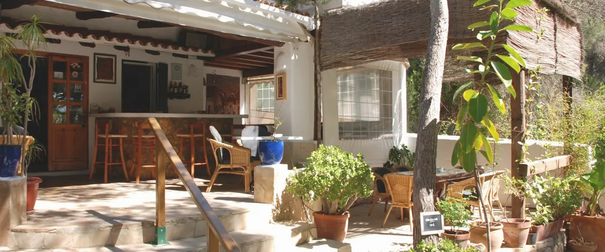
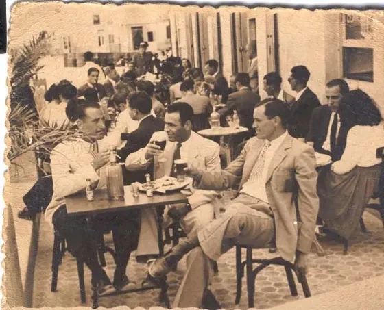
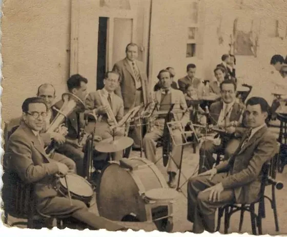
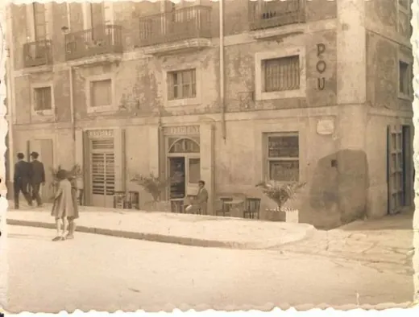
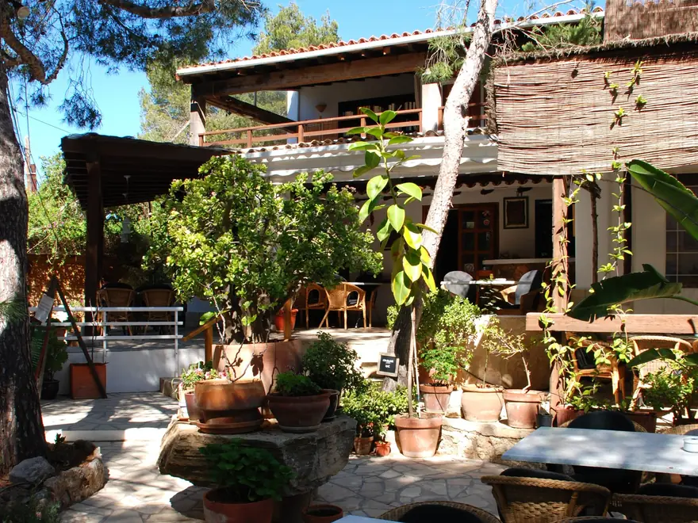
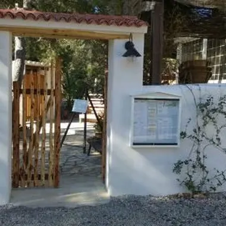

Can Pou
Café Restaurante
A family kitchen in a quiet Ibiza garden — fresh fish, good meat and homemade dishes, guided by the market and the seasons.

Three generations on Ibiza
The Can Pou story begins in 1925, when Juan — grandfather of today's owner — opened a coffee-shop and bar in the old marina of Ibiza town. His son Vicente, after learning the trade in Barcelona and France, turned it into a restaurant — the first in town to light up a neon sign.
In 1998, after perfecting their craft around the world, Juan, Daniel and Claire brought the family tradition to a renovated country house in Can Germà, near Cala Salada. The welcome and the cooking still carry their Ibizan, Scandinavian and French roots.
A family tradition since 1925
The old port café, Ibiza

Can Pou in the old port of Ibiza — music, coffee and good company since 1925.
Honest food, beautiful produce
No long menu — just what the market offers that day, cooked simply and touched by flavours from near and far. The card changes with the season.
Fresh local fish
Caught around the island and cooked with respect — from grilled sea bass to the catch of the day.
Steaks & meat
Stone-grilled steak and tender cuts, simply done and full of flavour.
Homemade classics
Croquetas, French-inspired starters and our well-loved Swedish meatballs in creamy sauce.
Breakfast & coffee
Easy mornings with good coffee, fresh bread and Claire's homemade island jams.

A calm corner of Ibiza
Our shaded garden is made for long, unhurried meals — for families, friends and the occasional curious little bird. Cool in the heat, warm in spirit, and always a short stroll from Cala Salada.
Come and find your table
We don't take online bookings — just call, message or email and we'll happily set a table for you.

Where we are
Camí Cala Salada, 2
Can Germà · Sant Antoni
Ibiza, Illes Balears
Opening hours
We open seasonally and our hours change through the year. For today's times, give us a quick call or message — we're glad to help.
What people come back for
A beautiful garden setting and true Ibiza hospitality.
Fresh local fish and the best homemade meatballs on the island.
A relaxed, family-run gem — warm service and great value.